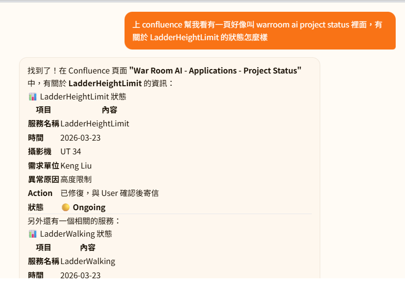

GARMIN · DS TEAM
INTERNSHIP · YEAR-END REPORT
PRESS → TO ADVANCE
01 / 12
GARMIN · DS TEAM
AGENDA
~ 7 MIN · Q&A AT END
02 / 12
GARMIN · DS TEAM
CH. 01 · HELLO
WHO'S TALKING
03 / 12
GARMIN · DS TEAM
CH. 02 · WHAT I DO
TWO PILLARS
04 / 12
GARMIN · DS TEAM
CH. 02 · ARGUS SERVICES
SAFETY · OPERATIONS
05 / 12
GARMIN · DS TEAM
CH. 03 · ML PIPELINE
COLLECT → LABEL → TRAIN → DEPLOY → MONITOR
06 / 12
GARMIN · DS TEAM
CH. 03 · ML PIPELINE — BOTTLENECKS
LABEL & MONITOR — THE TWO BOTTLENECKS
06 / 12
GARMIN · DS TEAM
PILLAR A · 眼睛
LABELING BREAKTHROUGH
07 / 12
GARMIN · DS TEAM
PILLAR A → B
CLOSING THE LOOP
08 / 12
GARMIN · DS TEAM
PILLAR B · GARMINCLAW
THE DIGITAL INTERN, FOR REAL
09 / 12
GARMIN · DS TEAM
PILLAR B · IN ACTION
GARMINCLAW · LIVE SCREENS
10 / 12
Pillar B · 真的長這樣
 FIG. 02
FIG. 02
 FIG. 03
FIG. 03
GarminClaw 實機畫面。

FIG. 0101 · CHAT
Confluence / Jira 聊天查詢
直接問 Agent，省下翻文件、找 ticket 的時間。
FIG. 02
02 · REPORT
異常事件週報
每週自動寄送，把問題主動推到信箱裡。
FIG. 03
03 · MEETING
會議錄音 + 摘要
幫我錄音並產出條列式紀錄，會後直接拿來用。
GARMIN · DS TEAM
CH. 06 · TAKEAWAYS
WHAT I LEARNED
11 / 12
GARMIN · DS TEAM
FIN · Q&A
END OF REPORT
12 / 12